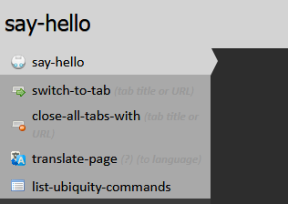
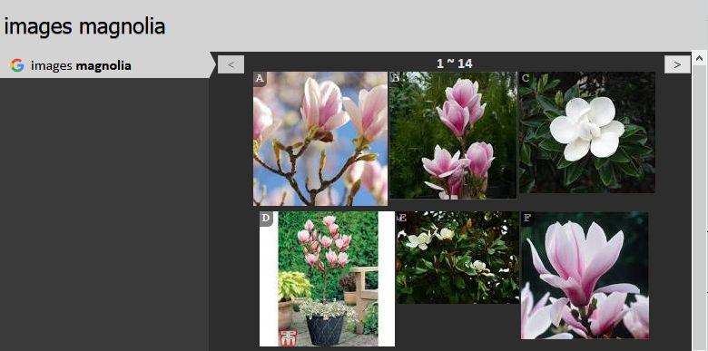

The great power of iShell - from a developer standpoint - is how easy it is to create commands. With only a couple of lines of Javascript, it enables even casual web developers to drastically enhance the features of the browser. This tutorial walks you through the process of being generative with iShell. The original Mozilla Ubiquity author tutorial, from which this one is adapted, could be found here.
The rest of this page documents the command development API as it is implemented in iShell. See the iShell API Reference for more details.
Note: iShell commands have access to the full browser WebExtension APIs and jQuery. If you need some features that are not covered by the existing add-on permissions, you need to add the necessary permissions to the add-on manifest and build/sign your own version of the add-on.
iShell doesn't require you to restart Firefox as you develop. Restarting is a drastic measure, and we want none of it. When you are using the built-in editor then you don't even need to save!
To open the iShell command editor, summon iShell (Control+Space) and use the "edit-shell-commands" command.
Let's start with the standard programming trope: printing "Hello, World!".
In the command editor type the following:
/** @command */
class SayHello {
execute() {
cmdAPI.notify("Hello, World!");
}
}Now try executing say-hello:

You'll see that "Hello, World!" is immediately displayed in the bottom-right corner of the screen in a standard Firefox notification.
cmdAPI is a namespace that contains all the functions you need to create
commands. In Mozilla Ubiquity commands were created by passing an object literal to the createCommand function, like the
following:
cmdAPI.createCommand({
names: ["say-hello"],
execute() {
cmdAPI.notify("Hello, World!");
}
});In iShell you just declare a class with the @command annotation. The command
name will be generated automatically. A command class may derive
from any other classes.
Only JavaDoc-style comments that start with
/** may be used to annotate classes. The regular JavaScript comments are
ignored. The content of these comments (except annotations) is displayed in the help section
of the iShell command listing. It may contain HTML or Markdown-formatted
text if the @markdown annotation is used.
execute is the only mandatory method for your commands. There are plenty of
other attributes that you can specify as methods or in annotations, but they are all
optional.
The command name is automatically generated from the class name in the kebab case. It is
possible to specify several names for a command through the @commnad annotation
by separating them with a comma:
@command say-hello, greet
In this case, the class name is not used.
This method is invoked when the user hits Enter in the iShell window. It can do
pretty much anything you want - or at least, anything you know how to write in JavaScript.
In the example above, we simply call cmdAPI.notify(), which displays the given
message in whichever way the operating system can.
There are many other useful functions in the cmdAPI namespace. For more
detailed information, take a look at the iShell API Reference.

Let's add a preview to our new command. Previews give the user feedback about what a command does before it's executed. Previews are great for providing rich visual feedback like displaying search results when using the images command as shown above. Previews have the full expressive power of HTML, including animations, so there's a lot you can do with them.
One point of design: preview code should never have side effects. That is, a preview should never (without user interaction) change the state of the system.
For the "say-hello" command, we don't need anything fancy: just some help text that is more descriptive than the default "Executes the say hello command."
/** @command say-hello, greet
@preview Displays a salutary greeting to the planet.
*/
class HelloWorld {
execute() {
cmdAPI.notify("Hello, World!");
}
}Here the preview is an HTML-formatted string. The preview can also be a function. We'll get to that in the next section.
Let's create a command that inserts the current date at the location of the cursor.
/** @command */
class InsertDate {
execute() {
cmdAPI.setSelection(new Date().toLocaleDateString());
}
}The new function here is setSelection(). This inserts the passed-in text onto
the page at the location of the cursor. If the cursor is in an editable text or a rich-text
field, the text gets dumped there. If the cursor isn't in an editable area, setSelection()
will still be able to insert the date. (Even when it isn't displayed, Firefox always keeps
track of a cursor position. To see it, type F7.) Try going to a page, selecting some
non-mutable text, and using the command. See, it works! This is particularly useful for
commands like "translate", where you want to replace non-editable text with its translation.
The toLocaleDateString() function is native to Javascript, so if you're not
familiar with it check out the documentation for the Javascript Date
object.
It's time to add a better preview to the date command. Let's have the preview show the date so that the user will know what to expect when they execute the command. As a side benefit the user doesn't even need to execute the command to do a quick check of the day.
/** @command */
class InsertDate {
_date() {
return new Date().toLocaleDateString();
}
preview(_, display) {
const date = this._date();
display.text(`Inserts today's date: "<i>${date}</i>"`);
}
execute() {
cmdAPI.setSelection(this._date());
}
}We've done three things here. The first was to factor out the code for getting the date into
the _date() function. This way we don't break DRY
by repeating code across the preview and execute functions. Notice that to access the _date(),
we use the this keyword.
The second thing we've done is to add a preview function. The second argument is the DOM
element that gets displayed as the preview for your command. Modify the
innerHTML property of display and you modify the preview. In
iShell it has some additional methods. In this
case, we use the text method of the display object to show the message we want.
The third thing we've done is the string formatting using JavaScript template literals. If
some advanced formatting is required, there is a handy function for this: cmdAPI.reduceTemplate(), that is also called
R. For example, the following code generates a nested HTML list from the
provided array of items:
const html =
`<ul>${
R(items, item =>
`<li>${item.text}:
<ul>
${R(item.subitems, subitem => `<li>${subitem.text}</li>`)}
</ul>
</li>`)
}</ul>`;
Previews display something meaningful to the user immediately. If you have a preview that requires a network request - say, to fetch some search results - that call might take a while to return. In the meantime, your command should display a placeholder preview giving the user feedback.
async preview(_, display) {
display.text("This will show until the fetch request completes");
const response = await cmdAPI.previewFetch(display, "http://example.com");
if (response.ok) {
const html = await response.text();
display.set(html);
}
else
display.error("HTTP request error.");
}In the command preview handler, networking calls should be performed with the cmdAPI.preview* family of functions to make these
calls automatically interruptable by the output of other commands. In the
display object, there are also few shorthands for the cmdAPI.previewFetch function:
fetch, fetchText, and fetchJSON. For example, the
handler in the previous listing could be equivalently written as follows:
async preview(_, display) {
display.text("This will show until the fetch request completes");
const html = await display.fetchText("http://example.com");
if (html)
display.set(html);
else
display.error("HTTP request error.");
}If a call to cmdAPI.previewFetch is interrupted by the preview of some other
command, it throws an AbortError exception. If you need to perform some complex
error processing and catch exceptions thrown by this function, do not change the preview if
AbortError is thrown. You can determine this with
cmdAPI.fetchAborted function:
async preview(_, display) {
display.text("This will show until the fetch request completes");
let html;
try {
html = await display.fetchText("http://example.com");
} catch (e) {
if (!cmdAPI.fetchAborted(e))
display.error("Network error.");
throw e; // AbortError may be rethrown, as any other exception
}
if (html)
display.set(html);
else
display.error("HTTP request error.");
}The code above could be written in a more concise way:
async preview(_, display) {
display.text("This will show until the fetch request completes");
const html = await display.fetchText("http://example.com", {_displayError: "Network error."});
if (html)
display.set(html);
else
display.error("HTTP request error.");
}While fetch-based functions use response.ok/status and exceptions
for error handling, old-fashioned jQuery-based functions, such as
cmdAPI.previewAjax do not throw exceptions. They accept error codes through
callbacks.
Let's start by making a simple command to echo back whatever you type.
/** @command */
class Echo {
constructor(args) {
args[OBJECT] = {nountype: noun_arb_text, label: "your shout"};
}
preview(args, display) {
display.text("Will echo: " + args.OBJECT.text);
}
execute(args) {
const msg = args.OBJECT.text + "... " + args.OBJECT.text + "......";
cmdAPI.notify(msg);
}
}This says that the command "echo" takes one argument which is arbitrary text. Whatever text the user enters will get wrapped in an input object and passed into both the preview and execute the function.
Try it! Run "echo hellooooo" and watch what happens.
iShell takes care of parsing the user's input, so you don't need to worry about handling pronoun substitution or any of the other natural-language-like features of the iShell parser. Try selecting some text on a page, and run "echo this". iShell should now echo the selected text.
Note that we gave three pieces of information when defining our argument: its pronoun, its nountype, and its label. The label is the easiest part: It's just whatever text you want has to appear in the iShell interface as a prompt for the user. E.g, if you run "echo", you will see the label for the argument:
echo (your shout)
The pronouns and the nountypes require some more explanation. We'll cover each of them in detail next.
Your command can take multiple arguments. Each one is identified by a pronoun. Each pronoun has the corresponding role. To understand roles, it helps to think of your command name as a verb, and each argument as a noun. Remember that iShell's command line is a pseudo-natural-language environment, so it attempts to be as close to natural language grammar as possible.
For example, if you've ever used the email command, you know that it takes up to two arguments: a message and a contact.
email message email to person@example.com email message to person@example.com email to person@example.com message
In grammatical terms, the message argument is the "direct object" of the verb "email". The person@example.com argument is an indirect object. We call it the "goal" of the verb.
In our simple "echo" command, we expect the user to type "echo hellooooo" or something like
that. The "hellooooo" is the direct object of the verb "echo", so we give it the OBJECT
role. If a command takes only one argument, that argument is usually an "object".
In the class-based syntax of iShell, if we were writing the email command, we'd define the arguments in the
class constructor using pronouns (OBJECT is an exception):
class Email {
constructor(args) {
args[OBJECT] = {nountype: noun_arb_text, label: "message""}; // object
args[TO] = {nountype: noun_type_contact, label: "contact"}; // goal
}Please do not use the command constructor for any purposes other than argument definition and simple field initialization, since iShell may create the command object multiple times for various reasons. There are several other functions that are used to initialize commands.
In the object-based syntax of Mozilla Ubiquity, it is only possible to define command arguments
using roles by setting the arguments command attribute:
names: ["email"],
arguments: [{role: "object", nountype: noun_arb_text, label: "message"}, // object
{role: "goal", nountype: noun_arb_contact, label: "contact"}], // toWhen your execute method is called, it is passed a dictionary that encapsulates the values for all arguments. Here we call JavaScript objects a dictionary to not confuse them with argument roles.
When your preview method is called, it is passed this dictionary, too. In the class-based syntax of
iShell, the argument dictionary is always passed as the first parameter. In the preview
method of object-based commands this dictionary comes at the second parameter.
This dictionary has one attribute corresponding to each pronoun. In our example above, the
command accepts only an object-role argument, so the preview and execute methods get passed
a dictionary with an OBJECT attribute (args.OBJECT in the code of
the echo command above).
If we made a command, like email, that takes an object-role argument and a goal-role
argument, its preview and execute methods would get passed a dictionary with
OBJECT and TO attributes (in the object-based syntax of
Mozilla Ubiquity thease attributes are called object and goal respectively).
args.OBJECT (or args.TO) has several attributes of its own:
args.OBJECT.text // a string of the input in plain text, without formatting
args.OBJECT.html // a string of the input in formatted HTML, including tags
args.OBJECT.data // for non-text input types, an arbitrary data object
args.OBJECT.summary // the HTML string displayed in the suggestion list, abbreviated if longOur example command only cares about the .text attribute of the input, because
it simply wants plain text. Often, when the user invokes your command by typing a few short
words into the input box, .text, .html, and .summary
will all have exactly the same value, and .data will be null. Many, if not
most, commands that you write will only care about the text value. Nevertheless, the other
versions of the input data are provided to you in case they differ from .text
and in case your command has a use for them.
Noun types specify what kind of input your command can accept for each one of its arguments.
For the echo command, we wanted the object-role argument to accept any text whatsoever, so
for its nountype we passed in the predefined noun_arb_text object. This object
accepts any arbitrary text as a valid argument and passes it to the command unchanged.
noun_arb_text is OK for very simple commands, like echoing back the user's
input. But for commands that take structured data, you will want to use more specific
nountypes.
For example, if a command can take a date, you would want to use noun_type_date
as the nountype of the argument. noun_type_date provides several benefits to
your command: it does all of the date parsing for you; it suggests dates that the user might
want to enter (for instance, it defaults to today's date). And, it lets the parser know that
your command takes a date. This is useful because when the user selects a date on a page and
invokes iShell, your command will be one of the top suggestions.
You can write your own noun types - we'll get into that later. For now, let's take a look at the built-in nountypes that your command can use. These include:
Once you are familiar with writing commands, you should check out the nountypes.js at
the addon source code, which has the implementation for most of the nountypes.
If none of the nountypes above is what you're looking for, there are several ways to define your own. The simplest is to use a regular expression. Suppose that (for whatever odd reason) you wanted your command to accept only arguments that begin with the letter N. The following regexp matches words that start with N:
/^[nN]/You could use it as a noun type, like so:
args[OBJECT] = {nountype: /^[nN]/, label: "word that starts with n"}](Note that you do not put quotes around the regexp.)
A regexp nountype will reject input that doesn't match, but it doesn't know how to help the user by suggesting appropriate input.
Suppose you're writing a command that takes a color as an argument (perhaps it outputs a hexadecimal RGB representation of that color.) To make a nountype that accepts colors, you can simply pass in an array of strings:
args[OBJECT] = {nountype: ["red", "orange", "yellow", "green",
"blue", "violet", "black", "white",
"grey", "brown", "beige", "magenta",
"cerulean", "puce"],
label: "color to convert"}]One benefit of specifying a list is that the parser can use it to offer suggestions. If the user enters "get-color bl", for instance, iShell will be able to suggest "black" and "blue" as the two valid completions based on the input. This makes list-based nountypes very useful for any command that can accept only a finite set of values.
Objects used as noun types allow to associate arbitrary data with the argument input value. Let's imagine that you want to create a command that offers a choice between some options represented by API parameters, that you do not want to show to the user.
args[OBJECT] = {nountype: {"option1": "api-parameter-1",
"option2": "api-parameter-2",
"option3": "api-parameter-3"}
label: "option"}]"option1", "option2"... will be shown in the UI and stored in args.OBJECT.text.
In the command handler methods, you can access the actual values of the corresponding API
parameters using the args.object.data property.
Of course, not every type of noun you'd be interested in can be represented as a finite list
or as a regexp. If you want to be able to accept or reject input based on some algorithmic
test, you can do so by writing a custom JavaScript object that implements a
suggest() method (and, optionally, a default() method.
For example, we can switch browser tabs with a command. The end goal is this: type a few characters that match the title of an open tab (in any window), hit return, and you've switched to that tab.
We'll write a command for this in two steps. The first step is creating a tab nountype. The second step is using that nountype to create the tab-switching command.
A nountype needs to only have two things: A label and a suggest()
function. It can optionally also have a default() function.
The label is what shows up when the command prompts for input. Suggest returns a list of input objects, each one containing the name of a matching tab.
const noun_type_browser_tab = {
label: "tab title or URL",
// Suggestion methods declared as async should not use the callback argument.
async suggest(text, html, callback, selectedIndices) {
const tabs = await browser.tabs.query({});
let suggs = tabs.map(tab => cmdAPI.makeSugg(tab.title || tab.url, null, tab, 1,
selectedIndices));
// cmdAPI.grepSuggs filters suggestions by the user input and scores them.
return cmdAPI.grepSuggs(text, suggs);
}
};The suggest method of a noun type always gets passed both text and html. If the input is coming from a part of a web page that the user has selected, these values can be different: they are both strings, but the html value contains markup tags while the text value does not. The Tab noun type only cares about the plain text of the tab name, so we ignore the value of html.
The callback argument is for use by nountypes that need to run asynchronously, i.e. because
they need to do network calls to generate suggestions. Note that when the
suggest function is declared as async, it should not call this function.
Please, avoid the use of the callback entirely, as it is left only for backward
compatibility. Return promises even if you use the old-fashioned callback-based APIs, such
as XMLHttpRequest or jQuery.ajax.
We use the convenience function cmdAPI.makeSugg() to generate an input object of
the type that the iShell parser expects. The full signature of this function is:
cmdAPI.makeSugg(text, html, data, score, selectionIndices);It requires at least one of text, html, data. Use
null if you want to skip text and/or html.
If the text or html input is very long, makeSugg() generates a summary for us
and puts it in the summary attribute of the input object.
We could have accomplished mostly the same thing without calling makeSugg() by
returning a list of anonymous objects like these:
{ text: tabName,
html: Utils.escapeHtml(tabName),
data: tab,
summary: Utils.escapeHtml(tabName) };The suggestion objects that our suggest() method generates are the same objects
that will eventually get passed in argument dictionaries into the execute() and
preview() methods of any commands that use this noun type.
If your noun type needs nothing more than the suggest function, you may apply
@nountype annotation to a regular function to generate the noun type with the
same name:
/** @nountype
@label foo
*/
function noun_type_foo(text, html, callback, selectedIndices) {
// ...
}The annotated function accepts the same arguments as the suggest function of a
full-fledged noun type.
Now that we are armed with the tab nountype, it is easy to make the tab-switching command.
/** @command
@description Switches to the tab with the given title.
*/
class SwitchTab {
constructor(args) {
args[OBJECT] = {nountype: noun_type_browser_tab};
}
preview({OBJECT: {text: tabName}}, display) {
if (tabName)
display.text(`Changes to ${tabName} tab.`);
else
display.text(`Switch to a tab by name.`);
}
execute({OBJECT: {data: tab}}) {
browser.tabs.update(tab?.id, {active: true});
}
}Classes annotated with the @metaclass annotation do not automatically create
commands. Instead, they could be instantiated and passed to
cmdAPI.createCommand, or be inherited from. This is convenient when it is
necessary to create a command-generating function like
cmdAPI.createSearchCommand, which produces commands that contain the same logic
but differ slightly in some aspects. In the example below, createSuffixCommand
function uses a metaclass to generate a set of such commands.
/**
This class does not create any commands automatically.
@command
@metaclass
@description Supplies input with the "%s" suffix.
*/
class SuffixCommand {
suffix = "";
constructor(args) {
args[OBJECT] = {nountype: noun_arb_text, label: "input"};
}
// a method named metaconstructor is used to initialize instances of the command
metaconstructor(options) {
// In metaconstructor it is possible to modify the values of the command
// attributes as they are defined for cmdAPI.createCommand.
// The following is not possible in a regular constructor:
this.description = this.description.replace("%s", this.suffix);
// the suffix and name properties are assigned here
Object.assign(this, options);
}
preview({OBJECT}, display) {
if (OBJECT?.text)
display.text(`Processed input: ${OBJECT?.text}${this.suffix}`);
else
this.previewDefault(display);
}
execute() {}
}
function createSuffixCommand(options) {
// Command constructor takes the same arguments as its metaconstructor method.
cmdAPI.createCommand(new SuffixCommand(options));
}
createSuffixCommand({name: "add-um-suffix", suffix: "um"});
createSuffixCommand({name: "add-issa-suffix", suffix: "issa"});Because the Web is volatile, iShell provides search commands only for the essential sites and
services. Nevertheless, you can easily make your own search command with the
@search annotation (the equivalent of cmdAPI.createSearchCommand()).
They can automatically parse HTML and JSON
content, generate preview, and also provide custom filter functions to process DOM of the
requested page with jQuery. Let's make a function that performs search in a dictionary:
/**
@search
@command
@delay 1000
@url https://mydictionary.com/define.php?term=%s
@container .definition
@title h1 a
@href h1 a
@description Find definitions in mydictionary.com
*/
class MyDictionary {
// container, title, href, thumbnail, and body properties could be parsed
// with the corresponding methods
parseBody(container) {
const meaning = container.find(".meaning");
meaning.css("border-bottom", "1px solid white");
meaning.css("margin-bottom", "5px");
const example = container.find(".example");
example.css("font-style", "italic");
return $("<div>").append(meaning).append(example);
}
}An object-based equivalent looks like the following:
cmdAPI.createSearchCommand({
name: "mydictionary",
previewDelay: 1000,
url: "https://mydictionary.com/define.php?term=%s",
description: "Find definitions in mydictionary.com"
parser: {
type : "html",
container : ".definition",
title : "h1 a",
href : "h1 a",
body : container => {
const meaning = container.find(".meaning");
meaning.css("border-bottom", "1px solid white");
meaning.css("margin-bottom", "5px");
const example = container.find(".example");
example.css("font-style", "italic");
return $("<div>").append(meaning).append(example);
}
}
});Content scripts allow modifying the live document loaded into a browser tab or retrieving its contents. Use the cmdAPI.executeScript() function to run JavaScript code in the context of the tab document. For example, let's create a command that changes the color of the heading tags (for example, H1 or H2) and prints the text of each heading in the preview area.
/**
Executes content scripts in the active tab
# Examples
- change-color **of** *H2* **to** *red*
@command
@markdown
@description Changes the color of the given heading tags.
*/
class ChangeColor {
constructor(args) {
args[OF] = {nountype: ["H1", "H2", "H3", "H4", "H5"], label: "selector"};
args[TO] = {nountype: ["red", "green", "blue"], label: "color"};
}
async preview({OF}, display) {
// A function with its arguments should be passed to executeScript.
// This works both in MV2 and MV3; do not pass references to class methods.
// The jQuery option allows the use of jQuery in content scripts.
const options = {func: extractHeadings, args: [OF.text], jQuery: true};
const [{result}] = await cmdAPI.executeScript(options);
const headingList = `${
R(result, h => (`- ${h}
`))
}
`;
display.set(headingList)
}
async execute({OF, TO}) {
const options = {func: colorHeadings, args: [OF.text, TO.text], jQuery: true};
await cmdAPI.executeScript(options);
}
}
// These functions are executed as content scripts in the context of the tab document:
function extractHeadings(selector) {
const headings = $(selector).map((_, element) => element.textContent);
return Array.from(headings);
}
function colorHeadings(selector, color) {
$(selector).css("color", color);
}Some commands may want to store data that persist even after closing Firefox. Meet the Bin interface. It is available as the last argument of every command method called by iShell (except constructor). Note the use of display.htmlList() function to create a list with clickable items in the preview area.
/**
@command
@delay 1000
@description Lets you jot a memo for the page.
*/
class Memo {
constructor(args) {
args[OBJECT] = {nountype: noun_arb_text, label: "text"};
}
preview(_, display, Bin) {
const href = cmdAPI.getLocation();
const list = Bin[href]();
const clickHandler = (i, ev) => {
list.splice(i, 1);
$(ev.target).closest("li").slideUp();
Bin[href](list.length ? list : null);
};
if (list)
display.htmlList(list, clickHandler);
else
display.text(`No memos taken for: ${href}`);
}
execute({OBJECT: {html}}, Bin) {
const href = cmdAPI.getLocation();
const list = Bin[href]() || [];
list.push(html);
Bin[href](list);
}
}The code below is the actual source code of the Pinterest command almost as it appears in iShell. It also demonstrates
some tricks that you would not find in the official documentation. With the pinterest command, users can
pin images found on the current page to a Pinterest
board. One of the command arguments provides autocompletion for all user's boards. This argument
also allows to create a board if it does not exist. A custom noun type (noun_type_board)
obtains the list of user's boards. The noun type should generate suggestions only for those boards
that match the current input.
To create a new board, we also need to append the current input as an additional suggestion to the generated suggestion list. We also need to score this additional suggestion with some low value to make it appear at the bottom of the board list. In the absence of the matching boards, we need to promote the creation of a new one by scoring the additional suggestion with the maximum possible value of 1. Note that generally the score value of 1 may conflict with the scoring of other arguments and produce unexpected results.
Due to the conceptual limitations of the iShell parser, the text of the additional suggestion as it is entered by the user can not contain spaces. It is because we already have one argument of noun_arb_text type (OBJECT). All text after the first space will automatically be assigned to the OBJECT argument. Board suggestions received from Pinterest can contain spaces, though.
/**
This noun type provides autocompletion for the user's Pinterest boards.
@label board
@nountype
*/
function noun_type_board(text, html, _, selectionIndices) {
let suggs = [], boards = this._command.deref().boards; // Obtain the list of all boards.
if (boards) {
// Create suggestions from all user's boards.
// Created suggestions contain board API objects in their .data property.
suggs = boards.map(b => cmdAPI.makeSugg(b.name, b.name, b, 1, selectionIndices));
// Filter the suggestions by the current input.
suggs = cmdAPI.grepSuggs(text, suggs);
}
// Add the current input as an additional suggestion. This suggestion does not contain
// a board object.
cmdAPI.addSugg(suggs, text, html, null, suggs.length? .001 : 1, selectionIndices);
return suggs;
}
/**
To create a pin, fill in the arguments and click on an image in the preview area
or press the corresponding Ctrl+Alt+<key> combination. Execute the command to open
the chosen board.
# Syntax
**pinterest** [*description*] **to** *board* [**of** *dimension*]
# Arguments
- *description* - a comment to the pin being created.
- *board* - a name of the board to attach the pin to. Created if not exists.
- *size* - minimal size of the images displayed in the command preview.
500 pixels is the default.
# Examples
**pinterest** **to** *cats* **of** *1000** *Nice Kitty*
@command
@markdown
@delay 1000
@icon https://pinterest.com/favicon.ico
@description Pin image to a board on Pinterest.
@uuid 044941CF-A22B-45EA-B135-EFF0CA847DA7
*/
export class Pinterest {
#pinterestAPI;
#boards = [];
constructor(args) {
noun_type_board._command = new WeakRef(this);
args[OBJECT] = {nountype: noun_arb_text, label: "description"};
args[TO] = {nountype: noun_type_board, label: "board"};
args[OF] = {nountype: noun_type_number, label: "size"};
}
// Executed when iShell is loaded.
async load(storage) {
// The actual command uses a more sophisticated initialization
// which defers the retrieval of the boards until it is needed.
this.#pinterestAPI = await new PinterestAPI(storage);
this.#boards = await this.#pinterestAPI.getBoards() || [];
}
get boards() {
return this.#boards;
}
async preview({OBJECT: {text: title}, OF: {text: dimension}, TO}, display, storage) {
dimension = dimension || 500;
const extractedImages = await this.#extractImagesFromPage(dimension);
if (extractedImages?.length) {
let imageList
const imageHandler = i => {
const board = TO?.data || TO?.text;
const imageURL = extractedImages[i].url;
this.#createPin(board, title, imageURL);
};
const imageURLs = extractedImages.map(i => i.url);
imageList = display.imageList(imageURLs, imageHandler);
this.#showImageDimensions(imageList, extractedImages);
}
else
display.text(`No images larger than ${dimension}px found.`)
}
async #extractImagesFromPage(dimension) {
const params = {func: extractImagesUserScript, args: [dimension], jQuery: true};
try {
const [{result}] = await cmdAPI.executeScript(params);
return result;
} catch (e) {
console.error(e);
}
}
#showImageDimensions(imageList, extractedImages) {
$("img", imageList).each(function() {
const image = extractedImages.find(i => i.url === this.src);
const title = `${image.width}x${image.height}`;
this.setAttribute("title", title);
});
}
async #createPin(board, description, imageURL) {
if (!board) {
cmdAPI.notifyError("No board is selected.");
return false;
}
if (typeof board === "string")
board = await this.#createBoard(board);
if (board) {
const link = cmdAPI.getLocation();
const success =
await this.#pinterestAPI.createPin(board.id, description, link, imageURL);
if (success) {
cmdAPI.notify("Successfully pinned image.");
return true;
}
else
cmdAPI.notifyError("Error creating pin.");
}
}
async #createBoard(name) {
const board = await this.#pinterestAPI.createBoard(name);
if (board) {
this.#boards.push(board);
return board;
}
else
cmdAPI.notifyError("Error creating board.");
}
async execute(args, storage) {
if (this.#pinterestAPI.isAuthorized) {
if (args.TO?.data)
cmdAPI.addTab(this.#pinterestAPI.getBoardURL(args.TO.data));
else
cmdAPI.addTab(this.#pinterestAPI.userProfileURL);
this.#boards = await this.#pinterestAPI.getBoards();
}
else
cmdAPI.addTab(this.#pinterestAPI.PINTEREST_URL);
}
}
function extractImagesUserScript(dimension) {
dimension = parseInt(dimension);
let images = $("img").filter(function () {
return this.naturalWidth >= dimension || this.naturalHeight >= dimension;
});
const bySizeDesc = (a, b) => Math.max(b.naturalWidth, b.naturalHeight)
- Math.max(a.naturalWidth, a.naturalHeight)
images = images.toArray().sort(bySizeDesc);
return images.map(i => ({url: i.src, width: i.naturalWidth, height: i.naturalHeight}));
}
class PinterestAPI {
// The details are not important...
}iShell native backend application is a local web server that may be used to transcend the limits of WebExtensions. In Firefox, WebExtensions manifest v3 forbids dynamic code execution. Because of that, the backend application is the only way to evaluate user commands in the Firefox MV3 version of iShell.
If you have installed iShell backend as a Python package, you may develop your own Flask handlers callable from user commands. There you could do anything that Python can (see also: Enso). Although technically you may make requests to any local web server, the lifetime of the backend application is managed automatically by the browser. Use the cmdAPI.helperFetch() function to call backend application handlers. For example, this is how you implement close-browser command for the Windows version of Firefox:
/** @command
@description Closes the browser.
*/
class CloseBrowser {
async execute() {
await cmdAPI.helperFetch("/close_browser")
}
}# The Flask handler.
# Requires psutil and pywin32 Python libraries.
import os
import psutil
import win32api
import win32con
import win32gui
import win32process
@app.route("/close_browser", methods=['GET'])
def close_browser():
pid = os.getpid()
firefox = psutil.Process(pid).parent().parent()
firefox_tree = firefox.children(recursive=True)
firefox_pids = [p.pid for p in firefox_tree]
firefox_pids.append(firefox.pid)
def enumHandler(hwnd, lParam):
[_, pid] = win32process.GetWindowThreadProcessId(hwnd)
if pid in firefox_pids:
win32api.SendMessage(hwnd, win32con.WM_CLOSE)
win32gui.EnumWindows(enumHandler, None)
return "", 204You now know all you need to know to get started developing useful iShell commands of your own.
Here are some miscellaneous tips that didn't fit elsewhere on this page, that may make development easier for you.
There are two additional command properties that may be set in cmdAPI.createCommand for that purposes:
Although any command could be run without an 'uuid' attribute, it is recommended to add it to every command you create. If a command is renamed, this will help to preserve its context menu entries, performance data, and the data the command stores through its Bin interface.
'uuid' may be an arbitrary unique string, for example, the homepage URL of a command. It is not necessary to specify 'uuid' attribute if the proper 'homepage' attribute is specified and will never change. An RFC 4122 v4 UUID is generated automatically for the commands inserted through command editor templates. In the examples above we omit this attribute for brevity.
If there is an active selection, and the value of an arbitrary text argument is equal
to one of the predefined anaphoric pronouns, the command handler
methods will receive the content of the selection through this argument. In the following
example, the pronoun this will be substituted for the content of the active selection
at the current page:
send this to user@example.com with subject
text
This may be useful if the command contains more than one arbitrary
text argument, so it is possible to specify any value of the second such argument in
the command line (the with argument in the example above). Without anaphoric
pronouns, all text after the first space in the value of the second arbitrary text
argument will be assigned to the first such one, which is always the
object. If there is no active selection, anaphoric pronouns are treated as
literal text values.
iShell parser recognizes the following anaphoric pronouns:
iShell provides the Ace code editor to develop
user-defined commands. It is worth getting familiar with its keyboard shortcuts, since some of them are not obvious. For example:
Ctrl-F - find, Ctrl-H - replace, Ctrl-, (Ctrl and
comma) - open editor settings panel. An additional nonstandard shortcut: Ctrl-S
will immediately evaluate and save the edited code.